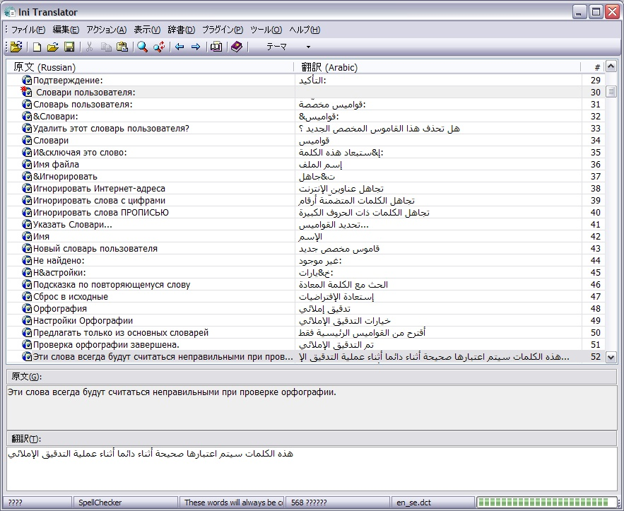

Support this project:
Ini Translator is a utility program to translate ini-style language files and has a look and feel reminiscent of poEdit (a great language editor for gnu gettext files). Ini-style language files are pretty common in Windows and are used by programs like Inno Setup, ISTool, FlashGet and Wallpaper Sequencer to name a few. The program runs of Windows 98/Me/XP/2000.
Here's a screenshot of the latest version. Notice that the program is in Japanese, the original file in Russian and the translation in Arabic:

Main features of the program:
For more information about the program and how to use it, see the help file included with the program.
The program is released subject to the MPL 1.1 license which basically means it has very few limitations as far as usage goes. For more information about MPL and it's implications, you can get a copy of the license at http://www.mozilla.org/MPL/MPL-1.1.html.
Ini Translator is hosted at sourceforge . The main page on sourceforge is http://sourceforge.net/projects/initranslator and the latest released version can be found here. You can also get the source code from CVS by configuring your CVS client according to this:
CVSROOT:
:pserver:anonymous@cvs.sourceforge.net:/cvsroot/initranslator
Module:
translator
You can also download the sources from SVN (preferred) using the following URL:
svn co https://svn.sourceforge.net/svnroot/initranslator initranslator
Finally, you can download a zip file with the sources from this URL:
If you would like to become an Ini Translator developer, contact me on this mail address.
Enjoy!
|
Hosted by:
|
Support this project: |